Review display
During a code review, reviewers spend most of their time using the review interface:
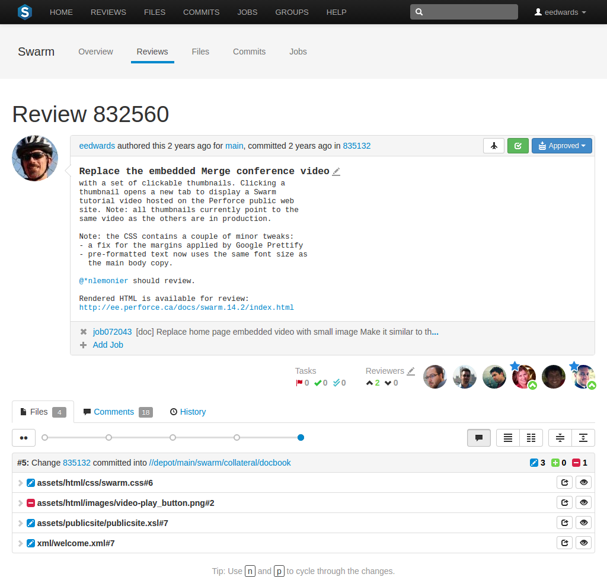
The review interface is very similar to the changelist interface; and provides largely the same functionality, but has several notable differences:
-
Git Fusion-initiated reviews include the Git logo beside the main review identifier. This indicator is important because Perforce users cannot update Git Fusion-initiated reviews.
-
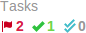 A Tasks area appears below the review's description. This area summarizes the number of comments that have been flagged as tasks, with separate counts for open, addressed, and verified tasks. See Tasks for more details.
-
A Reviewers area appears below the review's description whenever a review has one or more reviewers, or you are logged in.
This area includes, from left to right, the edit reviewers button , the current up and down vote counts, and the avatars of current reviewers. Required reviewers have a star badge over their avatar. Whenever a reviewer has voted on a review, their icon displays a badge indicating whether they voted up or down. If you are logged in and viewing a review you did not author, your avatar appears to the right of any other reviewers and its appearance varies according to the following conditions:
When you are not yet a reviewer, your avatar appears muted. Clicking your avatar presents a menu allowing you to vote up or down and thereby become a reviewer, or simply join a review as a reviewer.

When you are a reviewer, your avatar does not appear muted. If you have not yet voted, no badge appears on your avatar and clicking your avatar presents a menu allowing you to vote up or down, change whether your vote required or not, or leave the review.

When you are a reviewer and have already voted, your avatar displays a badge indicating your vote. Clicking your avatar presents a menu allowing you to clear or change your vote, change whether your vote is required or not, or leave the review.
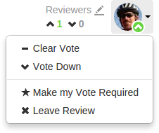
When you are a required reviewer, your avatar displays a star badge indicating that the review cannot be approved until you vote up. Clicking your avatar presents a menu allowing you to change your vote, make your vote optional, or leave the review.
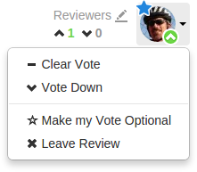
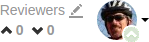 When a review is updated, if the review's list of files, file content, or file-types changes, any votes cast on the review become stale. The vote counts are reset, and the vote indicators become muted.
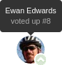 If you hover your mouse over a reviewer with a stale vote, a tooltip appears displaying the userid, how they voted, and on which version of the review; each version is represented as a point on the Review Timeline (see below).
Note
Stale vote handling is not supported for Git-created reviews.
-
A slider control, called the Review Timeline, appears just above the list of files. If the review's files have been updated at least once, this slider allows you to browse and compare arbitrary versions of the review's files.
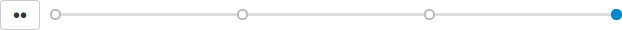
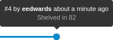 Each point on the slider represents a version of the review's files, with the oldest version on the left and newer versions on the right. Hover your mouse over each point to see a tooltip displaying the version number, who created it and when, plus the changelist containing a copy of that version's files.
The button to the left of the slider toggles diff mode for arbitrary versions of the review's files. In diff mode, the slider shows a bar indicating which two versions are being compared, and the endpoints of the slider can be dragged to any of the available points to compare any earlier version of the review with any later version.
Hovering your mouse over the bar shows a tooltip displaying the versions being compared, and the changelists that contain the files.

It is good to remember that a review consists of one or more Swarm-managed changelists. When comparing versions of a review, Swarm is showing any differences between the selected versions, not the review author's personal changelist. See Internal representation for details.
-
The file listing header displays:
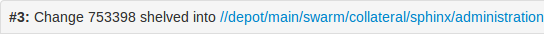
-
The current version of the files in the review.
-
Which changelist contains a shelved copy of the review's files.
-
The common path for all of the files in the review.
In diff mode, the file listing header displays:
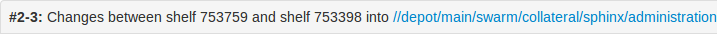
-
Which two versions of the review's files are being compared.
-
Which changelists contain the files being compared.
-
The common path for all of the files in both versions of the review.
-
-
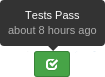 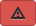 When continuous integration has been configured for a project, test success or failure is indicated in the review's heading. If your continuous integration tests can provide a URL that provides details of a test run, the indicator becomes linked; click the indicator to see the test details.
When you hover your mouse over the test status indicator, Swarm indicates the test status and how long ago that status was achieved.
-
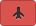 When automated deployment has been configured for a project, the deployment success or failure is indicated in the review's heading. If your deployment program can provide a URL that provides details of the deployment, the indicator becomes linked; click the indicator to see the deployment results.
-
The button is replaced with the review state drop-down button that indicates the review's current disposition. See States for more information.
-
An icon appears in the review's description, which allows you to update the description to reflect any updates have been made during the review.
-
The History tab presents a list of the events that affect this review, including:
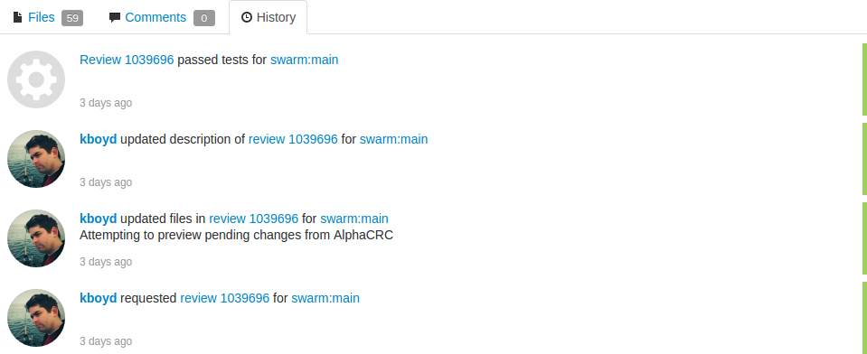
-
When the review was started
-
When a new reviewer joins the review
-
When the review's state changes
-
When the review's files are updated
-
When a reviewer votes on the review
-
When someone comments on the review, or one of its files
-
When tests pass or fail, provided continuous integration is configured
-
-
Beside each file in a review is a button, which help you keep track of which files you have reviewed. The read flag is remembered independently for each user. If the content of a file is changed in an update to the review, the read flag automatically clears. This is particularly useful when a code review consists of many files.
When clicked, the button's colors invert and the associated file is visually muted, to make it easy to distinguish read files from unread files:
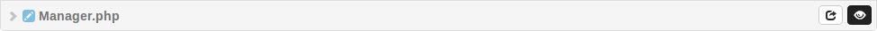
If a file has been marked as read, click the button a second time to reset the status to unread.